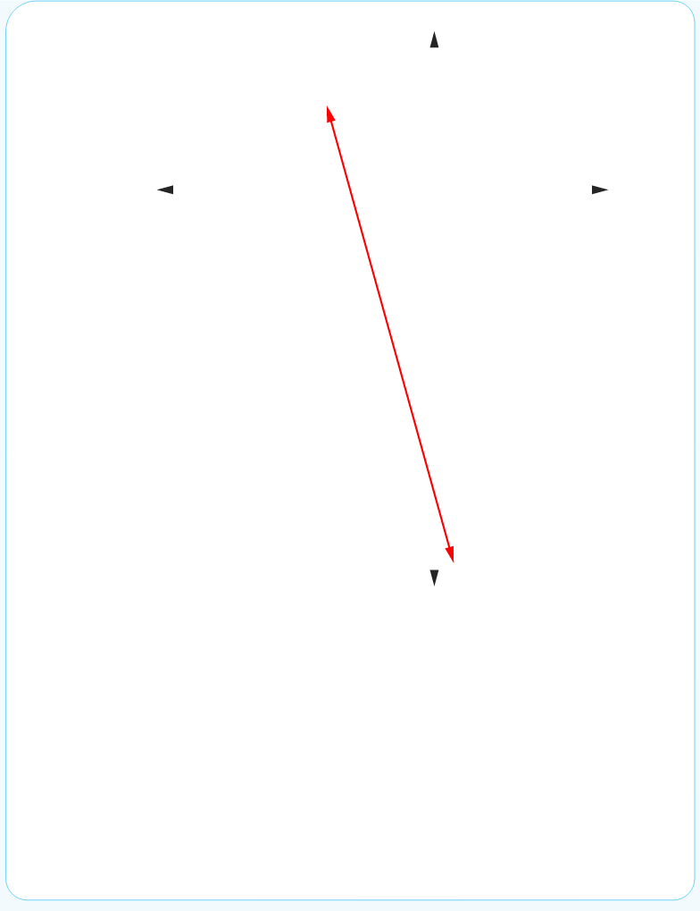

31.

33. (a) Gradient = 3, y-intercept is (0, -12)
(b) Gradient = , y-intercept is
(c) Gradient = , y-intercept is
(d) Gradient = , y-intercept is
35.
Tanzania Institute of Education
Mathematics Form 1

33. (a) Gradient = 3, y-intercept is (0, -12)
(b) Gradient = , y-intercept is
(c) Gradient = , y-intercept is
(d) Gradient = , y-intercept is
35.